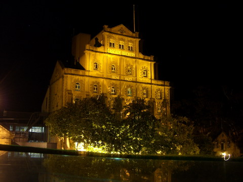

tasmania
first stop on our round the world trip was stuart's place (aka ren's dad). here he is showing us some recent work on his boat.
we started our driving tour in boat harbour. thanks again janine for trusting us with your van!
first stop was cradle mountain. we were lucky with a clear day.
next down to lake barrington to spend the night. here's the van, a great portable home with everything we'd ever need for a driving fun time.
now here's a rare sight! ren behind the wheel. just look at that serious concentration!
after barrington we stopped in at nearby tasmazia, a huge hedge maze complex.
not only do they have hedge mazes but the world's smallest world heritage area where i got in some trekking practice.
ren in the meantime was off visiting friends.
next we went through to binalong bay. here's the amazingly deserted beach of the bay of fires. great stuff.
from time to time though we were harassed by the locals. honestly mr wallaby, does this gas cylinder look edible to you??
 down to freycinet national park and after a hike up mt amos we had our first look at wineglass bay.
down to freycinet national park and after a hike up mt amos we had our first look at wineglass bay.
then further south to the ever spooky port arthur to look around the ruins.
 somewhere along the way we must have annoyed some ducks who ganged up on us in oatlands.
somewhere along the way we must have annoyed some ducks who ganged up on us in oatlands.
finally back to stuarts place to drop off the van.
next stop; matt and sarah's wedding. here's mat with a terrible i've-forgotten-something look. don't worry matt, sarah's fine!
and here she comes! with her soon-to-be new sister (emily) and brother (john) trying to get into my shot!
aahhhhh. what a lovely couple!
aahhhhh! what a place for a wedding! the source of my fav beer, cascade!